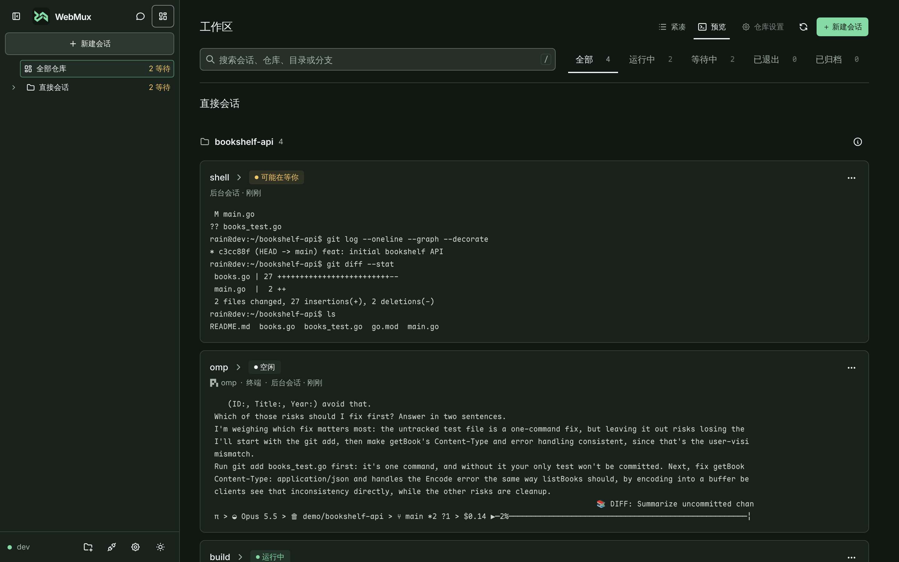
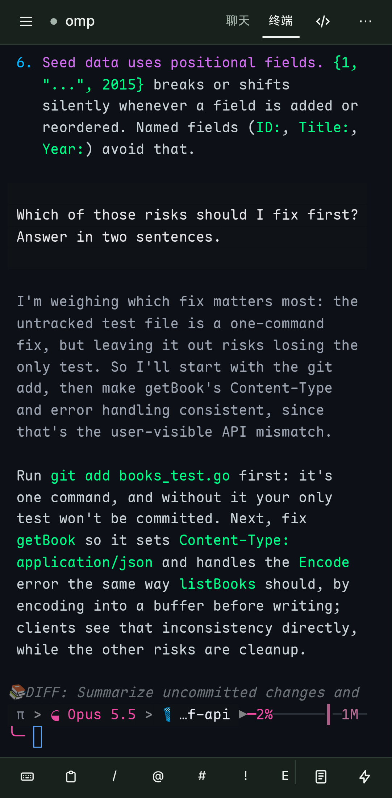
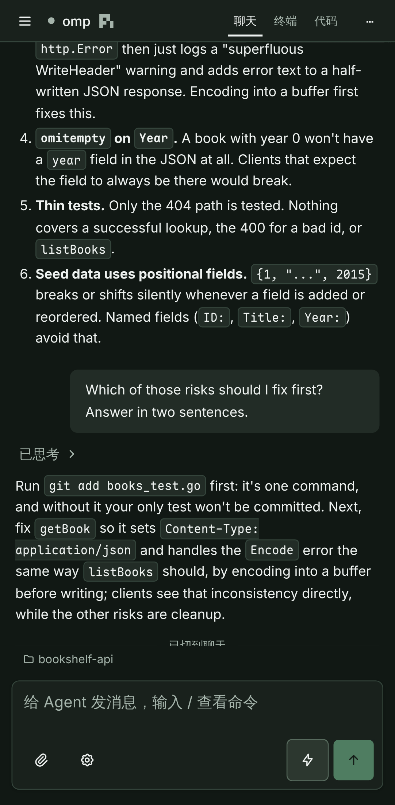
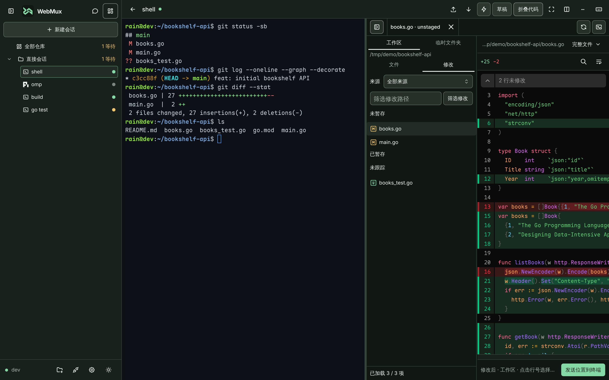

01 / 电脑上开工
你在电脑前让 Claude Code 重构一个模块，然后得出门。
合上笔记本，agent 还在干活。总览里按仓库分组列出所有会话，实时显示谁在运行、谁在等你、屏幕上正在发生什么。



02 / 手机上接管
地铁上手机亮起，它停下来问你一个问题。
锁屏推送叫你回来。可以用软键栏在原生 TUI 里回答，也可以把同一段对话切到聊天视图；回一句话它就继续。
03 / 回到电脑审阅
到了公司打开浏览器，改动的 Diff 已经摆在终端旁边。
审完在同一个终端里接着干，一键把 路径:行号 发给 agent。这一路是同一个进程，一行输出都不会丢。
